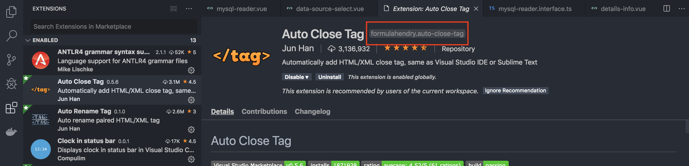
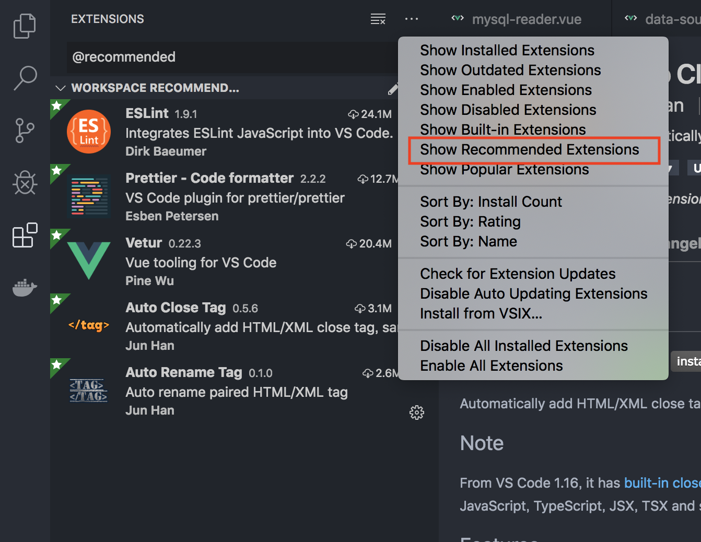

最近团队中开启了许多新的前端项目，也有新的同事加入了团队中
项目多了，如何确保所有成员都有一致的开发环境就是一个麻烦的问题，本文将介绍如何解决这个问题
背景知识
vscode 中的配置信息分为用户配置和项目配置两种
- 用户配置在所有打开的
vscode中生效 - 项目配置存放于项目所在位置的
.vscode文件夹中，当项目在vscode中打开时，针对打开的窗口生效
如果同时存在项目配置和用户配置，将以项目配置优先
我们可以通过项目配置文件来共享 vscode 配置，达到统一开发环境的目的
同步插件
插件文件 extensions.json
1 | // 示例代码 |
插件名称

设置完成后，可以在 vscode 插件配置中一键安装上面设置的插件

同步配置
配置文件 settings.json
1 | { |
配置文件的是自动生效的